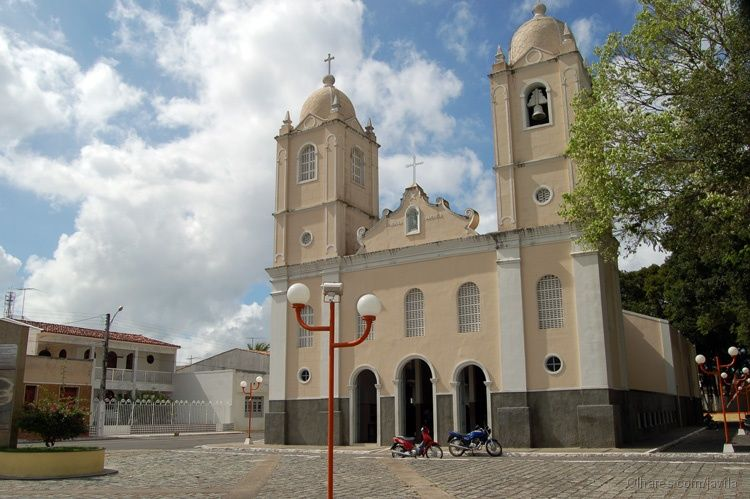

Campo do Brito
História
A 53 km de Aracaju ficavam os campos para criação de animais da família Brito. Hoje não há mais Britos, só o Campo do Brito, o município que nasceu de concessões de sesmarias aos padres Jesuítas. Em 10 de março de 1601 os padres ganharam as terras "junto à serra da Cajaíba, na tapera de Pirapean, entre o vale do Vaza-Barris, a serra de Itabaiana e subindo o rio até aquele pico". O distrito foi criado em 1845 já com a denominação de Campo do Brito e em 1912 é elevado a município, desmembrado de Itabaiana. Campo do Brito fica na "boca do sertão", seu solo tem qualidade, o que propicia a sua população viver da agricultura e pecuária.
fonte: https://pt.wikipedia.org/wiki/Campo_do_BritoPontos Turísticos
Barragem do Campo do Brito
A barragem do município de Campo de Brito é o principal ponto turístico da cidade. Um ambiente agradável com comidas típicas, pontos de pesca e apto ao uso de motos aquáticas.
Dados Gerais de acordo com o IBGE
| Prefeito (a) | Marcell Moade Ribeiro Souza |
| Vice-Prefeito (a) | Manoel Medici de Sousa |
| Site do município | https://campodobrito.se.gov.br/ |
| Área territorial | 201,518 km² |
| População estimada | 18.325 pessoas |
| Densidade demográfica | 83,03 hab/km² |
| IDHM | 0,621 |
| PIB per capita | R$ 11.827,97 |